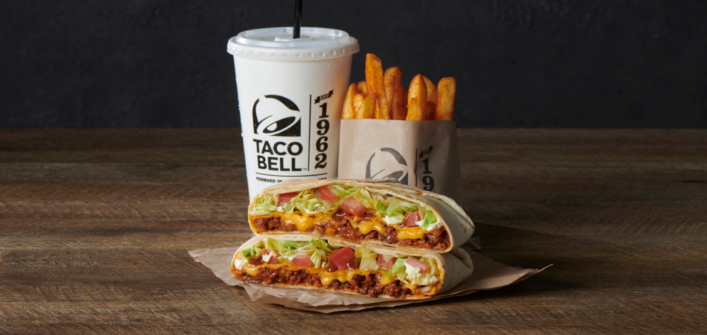

Crunchwrap SUPREME Recipe

Description
Ingredients
- Seasoned beef
- Diced tomatoes
- Sour cream
- Shredded lettuce
- Nacho cheese sauce
- Crispy tostada shell
- Flour tortilla
Steps
- Saute the beef with whatever seasonings you want as long as you actually season it
- Either make some cheese sauce or open a nice can of it
- Lay out the tortilla
- Layer the meat, cheese, tostada, and remaining ingredients
- Fold the tortilla around the ingredients
- Throw it on a pan and heat it up
- ENJOY!
take me home